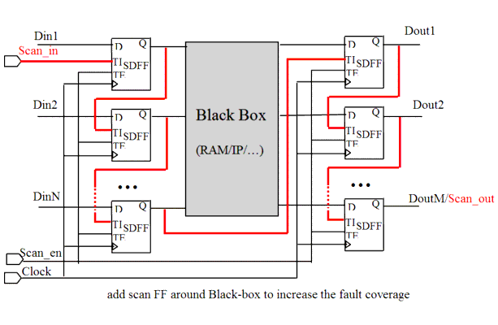

| Description | Black boxes are by definition not controllable or observable, so the combinatorial logic around black boxes cannot be tested. Inserting a scan path between the black box and the surrounding combinatorial logic changes the observability/controlability of that logic and increases test coverage. |
| Policy | DESIGN |
| Ruleset | DFT |
| Language | VHDL/Verilog |
| Type | Hardware |
| Severity | Error |
This is an example of valid Verilog code, followed by a circuit diagram that illustrates the correct approach:
module ntl_dft37_top;
...
wire Din1_black, Din2_black, ... DinN_black,
Dout1_black, Dout2_black, ...DoutM_black;
Black_box_ram U0 (.Din1(Din1_black), .Din2(Din2_black),
.DinN(DinN_black), .Dout1(Dout1_black), .Dout2(Dout2_black),
.DoutM(DoutM_black));
// black box
// Scan DFF - SDFF
SDFF U11(.D(Din1), .CP(Clock), .TI(Scan_in), .TE(Scan_en),
.Q(Din1_black)); SDFF U12(.D(Din2), .CP(Clock), .TI(Din1_black),
.TE(Scan_en), .Q(Din2_black));
...
SDFF U1N(.D(DinN), .CP(Clock), .TI(DinN-1_black), .TE(Scan_en),
.Q(DinN_black));
// Insert scan flip-flops around black box
SDFF U21(.D(Dout1_black), .CP(Clock), .TI(DinN_black), .TE(Scan_en),
.Q(Dout1));
SDFF U22(.D(Dout2_black), .CP(Clock), .TI(Dout1), .TE(Scan_en),
.Q(Dout2));
...
SDFF U2M(.D(DoutM_black), .CP(Clock), .TI(DoutM-1), .TE(Scan_en),
.Q(DoutM));
endmodule
